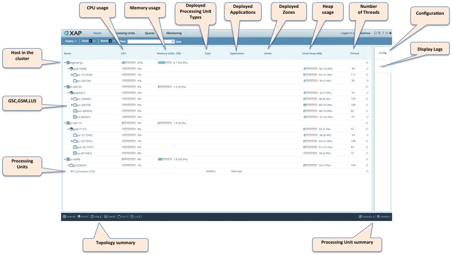
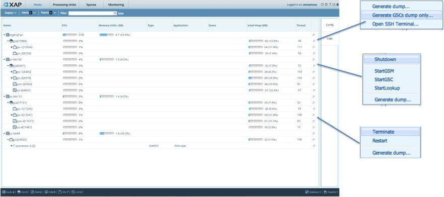
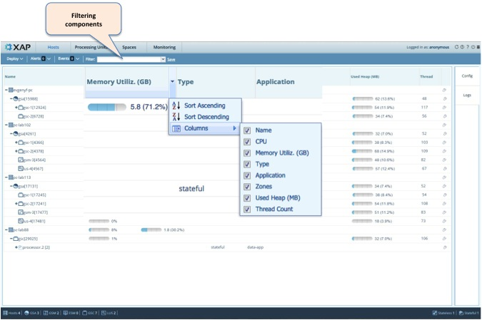
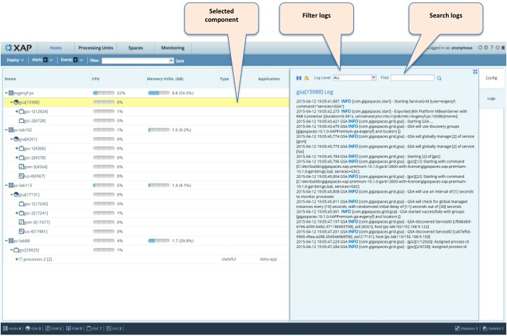

Use the Hosts view to monitor the physical resources of your cluster. These include the hosts and virtual machines. Please refer to the image below and the call-outs in it for more details.

Click the icon on the right side of the window to perform maintenance operations and modify specific settings on individual components.


For each component you can view the log information. It is possible to filter the logs and search them.

The icons in the table below represent specific elements of the infrastructure.
| Icon | Description |
|---|---|
| Host | |
| Agent | |
| GSM | |
| LUS | |
| GSC | |
| Processing Unit | |
| Space | |
| Stateful PU | |
| Stateless PU | |
| ESM | |
| Mirror Service | |
| Web application | |
| Gateway | |
| WAN |